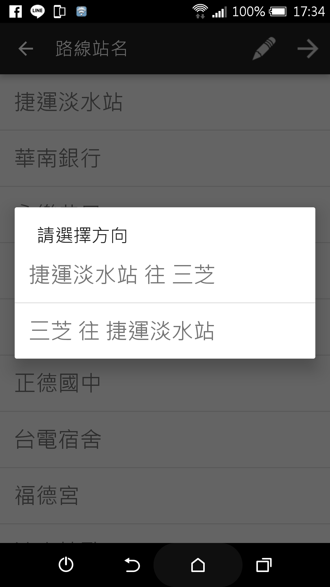

我叫林暘修，在新北市出生基隆長大。因為爸爸是資料庫工程師所以讓我從小對電子、電路、電腦很有興趣。
國中時因為在youtube看到一段Windows 3.1的影片，所以我開始研究起Windows作業系統和虛擬電腦軟體，也因為這樣讓我開始對電腦與程式有了越來越濃厚的興趣，後來因為自己常常摸索電子、電路、電腦所以就讀電機科，高二時正是Android系統開始崛起時，當時我並沒有Android系統的手機所以想在電腦裝Android SDK來玩玩Android模擬器， 但因不知道怎麼裝所以向老師詢問如何安裝，老師在教我安裝後推薦我去學撰寫Android App，我就開始學習java語言然後撰寫了Android app，在老師的推薦下就拿著自己寫的APP去參加一些比賽，也得了獎。
因為在高職時對程式有了很深的興趣大學決定讀資訊工程系，大一時當時正好在研究Android App介面的排版方式，所以就決定在Android上撰寫一個類似Windows命令提示字元的APP，也因為撰寫腳本語言解析器讓我完全了解了java語言的語法、特性，讓我更容易學習其他程式語言，在大學生活中，我為了練習或解決問題就寫了各種不同的程式或APP。
期望在未來，能夠發揮自己的特點及專長，如果有機會為 貴公司貢獻一己之力，將會用心、努力及虛心請益，全力以赴。
AShell腳本語言
語法說明:
http://blog.xuite.net/supmart/blog/429774559
使用方法:
將語言解析器放置C:\AShell裡

只需要在C:\ASell目錄下輸入AShell可以啟動AShell互動式命令列界面

若要使用AShell腳本檔只需要輸入
AShell <腳本名稱>.ash
也可以帶參數啟動
AShell <腳本名稱>.ash 參數一 參數二 ...
Android上的浮動視窗小工具
製作原因:
用手聽youtube音樂時只要一關閉螢幕或切換程式播放就會中斷，就算用手機瀏覽器開網頁版的也一樣，所以我就寫了一個浮動視窗APP來解決這個問題。
展示:

說明:

作品名稱: BusBT公車報站模擬器
主要功能:設定站牌的座標並以GPS判斷是否到達該站，並模擬公車的報站系統報站，可以編輯多個客運、路線、車站，還可以設命跑馬燈文字、標語，還有語音。
主畫面
當都建立好時就可以開始模擬

準備開始模擬時的畫面
模擬畫面
模擬時的路線預覽以及運行狀態，側邊選單顯示的是已過的站以及下一站的名稱
設定提供使用者設定跑馬燈與GPS的各項設定
設定畫面
跑馬燈文字清單，可以建立要顯示在跑馬燈上的文字
編輯跑馬燈文字
基隆旅遊app
介紹影片
啟動畫面
主畫面，畫面上方的圖片輪播會隨機挑出五個景點的相片還播放
所有景點選單
私房景點選單，自訂的景點就會在此顯示
景點資訊頁面，提供使用者瀏覽景點資訊
私房景點頁面，提供使用者瀏覽自己建立的景點資訊
景點地圖頁面，除了文字訊息外，也可以查看景點所在的位置
本APP也有提供使用者有關停車的資訊
另外本APP提供讓使用者規劃自己的旅遊行程
選擇與建立行程也頁面
規劃行程頁面，除了加入景點至行程外，也可以自動規劃景點與景點間的行程
最後，在設定中提供使用者備份與還原自己建立的所有景點與停車場資訊

設定選單
備份與還原
通用美食街點系統，可以在系統中建立多條美食街。
消費者端
消費者可以透過手機線上瀏覽菜單，並且下訂點餐
支援一次下訂多家店的餐點，以及線上付款
當訂單送出後，會收到訂單Email通知
可以查看美食街的銷售排行，以及評價店家
店家端
可以查看顧客下訂的訂單
接收訂單
可以選擇顧客的付款方式
設定付款方式
可以自己編輯菜單
編輯菜單
可以自己店家查看銷售統計
銷售統計畫面
可以自己店家的顧客留言以及評價
顧客留言以及評價畫面
抓取網頁上的YouTube連結並自動依序播放
WebPageYouTubeLinkPlayer使用說明

使用C#中webClient.DownloadStringTaskAsync函數抓取網頁內容，再用正規表示法抓取網頁中YouTube連結，
然後再用別人提供的免費Web API取得YouTube影片內容，再用C#中提供的Windows Media Player進行播放。
艦隊收藏自動遠征腳本，使用AShell腳本語言撰寫
這個腳本只有使用Win32 API操控滑鼠來自動遠征，並使用倒數計時來判斷遠征是否已經回來，還有使用Win32 API來判斷滑鼠圖示狀態來得知按鈕是否可以按下來判斷畫面是否還在Loading。
起始畫面

設定畫面

開始自動遠征畫面


 可以下載、新增、刪除檔案以及資料夾
可以下載、新增、刪除檔案以及資料夾
 功能選單頁面
功能選單頁面